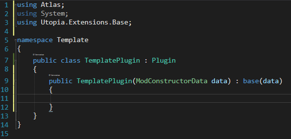
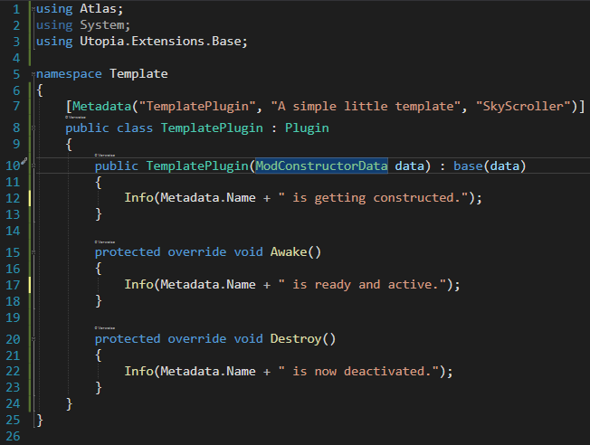
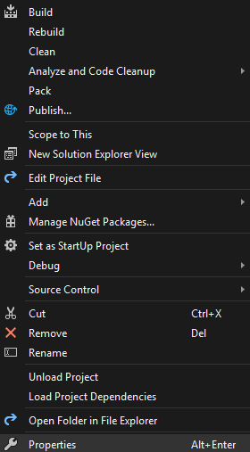
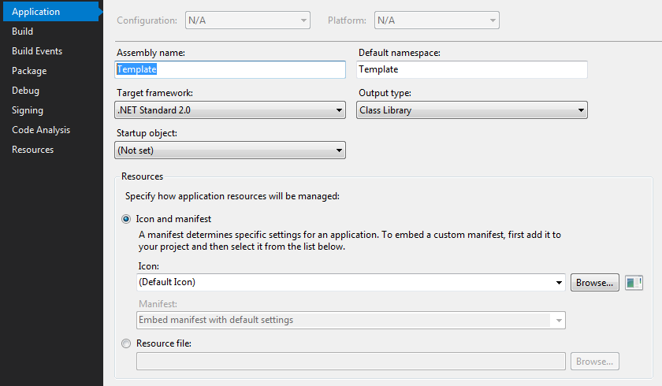
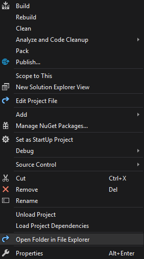
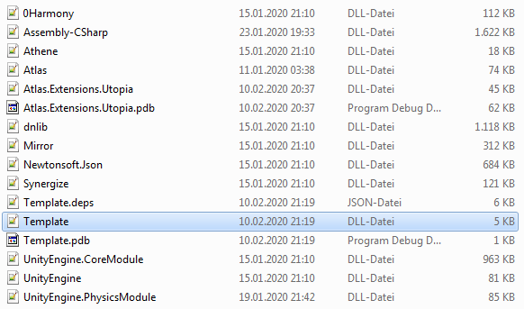

Basics
Step 1 | Creating the main class
Create a new C# .NET project.
Call the class however you want but it's importend to make it a child of Plugin.

Step 2 | Adding the metadata and write to the console.
Create a Attribute of 'Metadata' with the name of the plugin, a small description and the autores name.
Also add the two functions 'Awake' and 'Destory'.
Awake is called as sone as the plugin is ready and can be used.
Destory is called when the plugin gets deactived. (Server stop, uploading a newer version, etc.)

Step 3 | Changing the Assembly name
This is a very importend step.
If two plugins have the same assembly name they won't load.
Simply right click on your project and click on 'Properties'

Change the assembly name from template to your plugins name.

\
Step 4 | Export
To export yur plugin for release or testing rightclick on your project and click 'Build'.
After a couple of secconds your plugin will be ready.
Them right click your project and click on 'Open Folder in File Explorer'

Navigate to '../bin/Debug/'
There you will finde a bunch of files.

Locate your (assembly name).dll and put into the mods folder of your server.